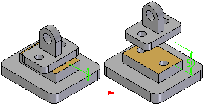

Modify the offset value for a Mate relationship
After a part or subassembly has been placed into an assembly, it is often necessary to modify the previously defined offset. This includes changing the offset type from one type to another (Fixed, Float, or Range). Several assembly relationships share the ability to support these different types of offsets such as FlashFit, Planar Align, Insert, Connect, Angle, Tangent, Parallel, and Match Coordinate Systems (Fixed or Float).
The PathFinder is used to select the part and then the relationship to modify (for more information, see PathFinder in assemblies).
-
Verify that the PathFinder is open (View tab→Show group→Panes→PathFinder).
The PathFinder is divided into two panes:
-
Top Pane—Displays the parts, assemblies, and sketches that make up the assembly.
-
Bottom Pane—Displays the relationships used to position the selected part or assembly.
-
-
In the top pane of PathFinder, select the part whose relationship is to be modified.
Note:The part is highlighted in the assembly workspace and the bottom pane of PathFinder displays the relationships that have been applied between the selected part and the related parts.
-
In the bottom pane of PathFinder, select the part relationship that is to be modified. The relationship is highlighted in the assembly workspace to show the relationship that is to be modified.
The Edit Relationships command bar is displayed.
-
On the Edit Relationships command bar, in the Offset Value box, type a new offset value. The offset type (Fixed, Float, or Range) and associated values can also be changed using this interface.
-
Fixed—When a fixed offset is defined, the value for the offset distance (the fixed distance between the selected faces) is specified. If the offset value is set to zero, the faces are coplanar.

-
Float—When a floating offset is defined, another applied relationship will control the offset distance. This option is selected when a fixed value is not known or is variable and the offset is to be determined by some subsequent relationship.
-
Range—When a range option is selected, two offset values are defined to limit the upper and lower limit of the offset values. Movement is limited by the defined range.
Tip:A negative offset value can be entered if the associated parts are supposed to overlap.
-
How do I
Using the Mate commandUsing the Planar Align command
Apply an axial align relationship
Insert a part in an assembly
Apply a connect relationship
Using the Angle command
Using the Tangent command
Place a cam relationship
Apply a path relationship
Using the Parallel command
Apply a gear relationship
Using the Center-Plane command
Place a Rigid Set relationship
Using the Ground command
Update the working environment
Learn more
Assembly Relationships ManagerLook up more details
About the FlashFit relationshipAbout the Mate relationship
About the Planar Align relationship
About the Axial Align relationship
About the Insert relationship
About the Connect relationship
About the Angle relationship
About the Tangent relationship
About the Cam relationship
About the Path relationship
About the Parallel relationship
About the Gear relationship
Position two parts by matching their coordinate systems
About the Match Coordinate Systems relationship
About the Center-Plane relationship
About the Rigid Set relationship
About the Ground relationship
Update Relationships command